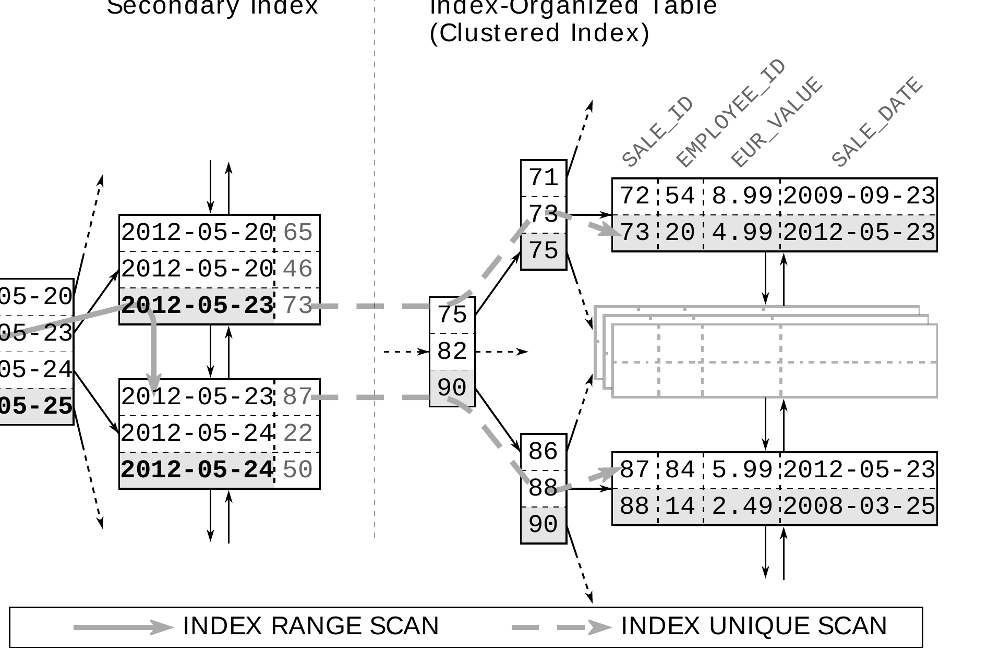

Chương 5
Clustering Data
The Second Power of Indexing#
Thuật ngữ cluster được dùng trong nhiều lĩnh vực. Chẳng hạn, star cluster là một nhóm ngôi sao. Computer cluster lại là một nhóm computer làm việc chặt chẽ với nhau — để giải quyết một bài toán phức tạp (high-performance computing cluster) hoặc tăng availability (failover cluster). Nói chung, cluster là những thứ có liên quan và xuất hiện cùng nhau.
Trong computing còn có một loại cluster khác — loại thường bị hiểu sai: data cluster. Clustering data nghĩa là lưu những data được access liên tiếp ở gần nhau để việc access cần ít IO operation hơn. Data cluster rất quan trọng đối với database tuning. Computer cluster cũng rất phổ biến trong ngữ cảnh database — khiến thuật ngữ cluster trở nên mơ hồ. Câu “Let’s use a cluster to improve database performance” là một ví dụ; nó có thể nói đến computer cluster nhưng cũng có thể nghĩa là data cluster. Trong chapter này, cluster nói chung sẽ chỉ data cluster.
Data cluster đơn giản nhất trong SQL database là row. Database lưu tất cả column của một row trong cùng database block nếu có thể. Có ngoại lệ nếu row không vừa trong một block — ví dụ khi có LOB type.
Column Stores#
Các database dạng column-oriented, hay column-store, tổ chức table theo column. Model này có lợi khi access nhiều row nhưng chỉ một vài column — một pattern rất phổ biến trong data warehouse (OLAP).
Index cho phép cluster data. Cơ sở của điều này đã được giải thích trong Chapter 1, “Anatomy of an Index”: index leaf node lưu indexed column theo thứ tự, nên các value tương tự được lưu cạnh nhau. Điều đó có nghĩa index xây dựng các cluster gồm những row có value tương tự.
Khả năng cluster data quan trọng đến mức tôi gọi nó là power thứ hai của indexing.
Các section sau giải thích cách dùng index để cluster data và cải thiện query performance.
Index Filter Predicates Used Intentionally#
Rất thường xuyên, index filter predicate cho thấy index được dùng không đúng do column order sai trong concatenated index. Tuy nhiên, index filter predicate cũng có thể được dùng có chủ đích — không phải để cải thiện range scan performance mà để nhóm những data được access liên tiếp lại với nhau.
Các predicate trong where clause không thể làm access predicate là candidate tốt cho kỹ thuật này:
SELECT first_name, last_name, subsidiary_id, phone_number
FROM employees
WHERE subsidiary_id = ?
AND UPPER(last_name) LIKE '%INA%';Hãy nhớ rằng LIKE expression có wildcard ở đầu không thể dùng index tree. Nghĩa là indexing LAST_NAME không thu hẹp index range được scan — bất kể bạn index LAST_NAME hay UPPER(last_name). Vì vậy condition này không phải candidate tốt để indexing.
Tuy nhiên, condition trên SUBSIDIARY_ID rất phù hợp để indexing. Chúng ta thậm chí không cần thêm index mới vì SUBSIDIARY_ID đã là leading column trong index của primary key.
--------------------------------------------------------------
|Id | Operation | Name | Rows | Cost |
--------------------------------------------------------------
| 0 | SELECT STATEMENT | | 17 | 230 |
|*1 | TABLE ACCESS BY INDEX ROWID| EMPLOYEES | 17 | 230 |
|*2 | INDEX RANGE SCAN | EMPLOYEE_PK| 333 | 2 |
--------------------------------------------------------------
Predicate Information (identified by operation id):
---------------------------------------------------
1 - filter(UPPER("LAST_NAME") LIKE '%INA%')
2 - access("SUBSIDIARY_ID"=TO_NUMBER(:A))Trong execution plan ở trên, cost value tăng một trăm lần từ INDEX RANGE SCAN đến TABLE ACCESS BY INDEX ROWID tiếp theo. Nói cách khác, table access thực hiện phần lớn công việc. Đây thực sự là pattern phổ biến và bản thân nó không phải vấn đề. Tuy nhiên, nó là contributor đáng kể nhất vào overall execution time của query này.
Table access không nhất thiết là bottleneck nếu các row được access nằm trong một table block, vì database có thể fetch toàn bộ row bằng một read operation. Ngược lại, nếu các row đó nằm rải rác trong nhiều block, table access có thể trở thành performance problem nghiêm trọng vì database phải fetch nhiều block để lấy toàn bộ row. Nghĩa là performance phụ thuộc vào physical distribution của các row — nói cách khác, phụ thuộc vào clustering của row.
Thực tế có thể cải thiện query performance bằng cách sắp xếp lại row trong table để chúng tương ứng với index order. Tuy nhiên, method này hiếm khi áp dụng được vì bạn chỉ có thể lưu table row theo một sequence. Nghĩa là bạn chỉ có thể optimize table cho một index. Ngay cả khi chọn được một index duy nhất để optimize table, đây vẫn là task khó vì hầu hết database chỉ cung cấp tool rất sơ sài cho việc này. Cái gọi là row sequencing rốt cuộc là một approach khá không thực tế.
The Index Clustering Factor#
Index clustering factor là indirect measure của xác suất hai index entry liên tiếp reference đến cùng một table block. Optimizer tính đến xác suất này khi tính cost value của operation TABLE ACCESS BY INDEX ROWID.
Đây chính là nơi power thứ hai của indexing — clustering data — phát huy tác dụng. Bạn có thể thêm nhiều column vào index để chúng tự động được lưu theo một order được xác định rõ. Điều đó biến index thành một tool mạnh nhưng đơn giản để cluster data.
Để áp dụng concept này vào query ở trên, chúng ta phải extend index để cover toàn bộ column trong where clause — kể cả những column không thu hẹp index range được scan:
CREATE INDEX empsubupnam ON employees
(subsidiary_id, UPPER(last_name));Column SUBSIDIARY_ID là index column đầu tiên nên có thể được dùng làm access predicate. Expression UPPER(last_name) cover LIKE filter dưới dạng index filter predicate. Index biểu diễn uppercase giúp tiết kiệm một vài CPU cycle trong quá trình execute, nhưng index thông thường trên LAST_NAME cũng hoạt động. Bạn sẽ tìm hiểu thêm về điều này trong section tiếp theo.
--------------------------------------------------------------
|Id | Operation | Name | Rows | Cost |
--------------------------------------------------------------
| 0 | SELECT STATEMENT | | 17 | 20 |
| 1 | TABLE ACCESS BY INDEX ROWID| EMPLOYEES | 17 | 20 |
|*2 | INDEX RANGE SCAN | EMPSUBUPNAM| 17 | 3 |
--------------------------------------------------------------
Predicate Information (identified by operation id):
---------------------------------------------------
2 - access("SUBSIDIARY_ID"=TO_NUMBER(:A))
filter(UPPER("LAST_NAME") LIKE '%INA%')Execution plan mới hiển thị chính các operation như trước. Dù vậy, cost value đã giảm đáng kể. Trong predicate information, chúng ta thấy LIKE filter đã được áp dụng ngay trong INDEX RANGE SCAN. Các row không thỏa LIKE filter bị loại ngay lập tức. Table access không còn filter predicate nào nữa. Nghĩa là nó không load những row không thỏa where clause.
Sự khác biệt giữa hai execution plan nhìn thấy rất rõ trong column “Rows”. Theo estimate của optimizer, query cuối cùng match 17 record. Tuy vậy, index scan trong execution plan thứ nhất trả về 333 row. Database sau đó phải load 333 row này từ table để áp dụng LIKE filter, làm kết quả giảm xuống còn 17 row. Trong execution plan thứ hai, index access ngay từ đầu đã không trả về những row đó, nên database chỉ phải thực hiện operation TABLE ACCESS BY INDEX ROWID 17 lần.
Bạn cũng nên lưu ý cost value của operation INDEX RANGE SCAN tăng từ 2 lên 3 vì column bổ sung làm index lớn hơn. Xét performance gain đạt được, đây là một compromise chấp nhận được.
Ví dụ đơn giản này dường như xác nhận common wisdom rằng nên index mọi column trong where clause. Tuy nhiên, “wisdom” này bỏ qua tầm quan trọng của column order, yếu tố quyết định condition nào có thể được dùng làm access predicate và vì vậy có ảnh hưởng rất lớn đến performance. Do đó, quyết định về column order không bao giờ nên để cho chance quyết định.
Index size cũng tăng theo số lượng column — đặc biệt khi thêm text column. Đương nhiên, index lớn hơn không làm performance tốt hơn, dù logarithmic scalability làm giảm đáng kể mức ảnh hưởng. Tuyệt đối không nên thêm tất cả column được nhắc đến trong where clause vào index; thay vào đó, chỉ dùng index filter predicate có chủ đích để giảm data volume ở một execution step sớm hơn.
Index-Only Scan#
Index-only scan là một trong những tuning method mạnh nhất. Nó không chỉ tránh access table để evaluate where clause, mà còn tránh hoàn toàn table access nếu database có thể tìm các column được select ngay trong index.
Để cover toàn bộ query, index phải chứa tất cả column từ SQL statement — đặc biệt là các column trong select clause như ví dụ sau:
CREATE INDEX sales_sub_eur
ON sales
( subsidiary_id, eur_value );
SELECT SUM(eur_value)
FROM sales
WHERE subsidiary_id = ?;Indexing where clause đương nhiên được ưu tiên hơn các clause khác. Vì vậy, column SUBSIDIARY_ID nằm ở vị trí đầu tiên để đủ điều kiện làm access predicate.
Execution plan cho thấy index scan không có table access tiếp theo (TABLE ACCESS BY INDEX ROWID).
----------------------------------------------------------
| Id | Operation | Name | Rows | Cost |
----------------------------------------------------------
| 0 | SELECT STATEMENT | | 1 | 104 |
| 1 | SORT AGGREGATE | | 1 | |
|* 2 | INDEX RANGE SCAN| SALES_SUB_EUR | 40388 | 104 |
----------------------------------------------------------
Predicate Information (identified by operation id):
---------------------------------------------------
2 - access("SUBSIDIARY_ID"=TO_NUMBER(:A))Index cover toàn bộ query nên còn được gọi là covering index.
Index có một bản copy của column EUR_VALUE nên database có thể sử dụng value được lưu trong index. Không cần access table vì index đã có toàn bộ thông tin để đáp ứng query.
Index-only scan có thể cải thiện performance rất lớn. Hãy nhìn row count estimate trong execution plan: optimizer dự kiến aggregate hơn 40,000 row. Điều đó có nghĩa index-only scan ngăn 40,000 table fetch — nếu mỗi row nằm trong một table block khác nhau. Nếu index có clustering factor tốt — tức là các row tương ứng được cluster trong một vài table block — lợi ích có thể thấp hơn đáng kể.
Ngoài clustering factor, số row được select cũng giới hạn performance gain tiềm năng của index-only scan. Chẳng hạn, nếu select một row duy nhất thì bạn chỉ tiết kiệm được một table access. Vì tree traversal cũng cần fetch một vài block, table access được tiết kiệm có thể trở nên không đáng kể.
Index-only scan là một indexing strategy mạnh tay. Đừng chỉ vì nghi ngờ mà thiết kế index cho index-only scan, vì cách đó sử dụng memory không cần thiết và làm tăng maintenance effort cần cho các update statement. Xem Chapter 8, “Modifying Data”. Trong thực tế, trước tiên bạn nên index mà không xét đến select clause, rồi chỉ extend index nếu cần.
Index-only scan cũng có thể gây ra những bất ngờ khó chịu, chẳng hạn khi giới hạn query ở các sale gần đây:
SELECT SUM(eur_value)
FROM sales
WHERE subsidiary_id = ?
AND sale_date > ?;Nếu không xem execution plan, người ta có thể kỳ vọng query chạy nhanh hơn vì nó select ít row hơn. Tuy nhiên, where clause reference đến một column không nằm trong index, nên database phải access table để load column này.
--------------------------------------------------------------
|Id | Operation | Name | Rows |Cost |
--------------------------------------------------------------
| 0 | SELECT STATEMENT | | 1 | 371 |
| 1 | SORT AGGREGATE | | 1 | |
|*2 | TABLE ACCESS BY INDEX ROWID| SALES | 2019 | 371 |
|*3 | INDEX RANGE SCAN | SALES_DATE| 10541 | 30 |
--------------------------------------------------------------
Predicate Information (identified by operation id):
---------------------------------------------------
2 - filter("SUBSIDIARY_ID"=TO_NUMBER(:A))
3 - access("SALE_DATE">:B)Table access làm tăng response time dù query select ít row hơn. Factor liên quan không phải số row query trả về, mà là số row database phải inspect để tìm chúng.
Nếu một index không còn được dùng cho index-only scan, optimizer sẽ chọn execution plan tốt tiếp theo. Điều đó có nghĩa optimizer có thể chọn một execution plan hoàn toàn khác hoặc, như ở trên, một execution plan tương tự nhưng dùng index khác. Trong trường hợp này, nó dùng index trên SALE_DATE, là phần còn lại từ chapter trước.
Từ góc nhìn của optimizer, index này có 2 advantage so với SALES_SUB_EUR. Optimizer cho rằng filter trên SALE_DATE có selectivity cao hơn filter trên SUBSIDIARY_ID. Bạn có thể thấy điều đó trong column “Rows” tương ứng của 2 execution plan gần nhất (khoảng 10,000 so với 40,000). Tuy nhiên, các estimation này hoàn toàn arbitrary vì query dùng bind parameter. Chẳng hạn, condition SALE_DATE có thể select toàn bộ table nếu truyền vào ngày của sale đầu tiên.
Advantage thứ hai của index SALES_DATE là nó có clustering factor tốt hơn. Đây là một lý do hợp lệ vì table SALES chỉ tăng theo chronological order. Row mới luôn được append vào cuối table nếu không có row nào bị delete. Vì vậy, table order tương ứng với index order vì cả hai được sort gần đúng theo chronological order — index có clustering factor tốt.
Khi dùng index có clustering factor tốt, các row được select được lưu gần nhau, nên database chỉ cần đọc một vài table block để lấy toàn bộ row. Dùng index này, query có thể đủ nhanh mà không cần index-only scan. Trong trường hợp đó, chúng ta nên gỡ các column không cần thiết khỏi index kia.
Trong ví dụ cụ thể này, có một happy coincidence. Filter mới trên SALE_DATE không chỉ ngăn index-only scan mà đồng thời còn mở ra một access path mới. Vì vậy optimizer có thể giới hạn performance impact của thay đổi này. Tuy nhiên, cũng có thể ngăn index-only scan bằng cách thêm column vào các clause khác. Việc thêm column vào select clause lại không bao giờ mở được một access path mới để hạn chế impact của việc mất index-only scan.
Function-based index cũng có thể gây bất ngờ khó chịu khi kết hợp với index-only scan. Index trên UPPER(last_name) không thể dùng cho index-only scan khi select column LAST_NAME. Ở section trước, đáng lẽ chúng ta phải index chính column LAST_NAME để hỗ trợ LIKE filter và cho phép dùng nó cho index-only scan khi select column LAST_NAME.
Các query aggregation như ví dụ trên là candidate tốt cho index-only scan. Chúng query nhiều row nhưng chỉ một vài column, nên một index mảnh là đủ để hỗ trợ index-only scan. Càng query nhiều column, bạn càng phải thêm nhiều column vào index để hỗ trợ index-only scan. Vì vậy, developer chỉ nên select những column thực sự cần.
Ngoài việc indexing nhiều row cần nhiều space, bạn cũng có thể chạm đến giới hạn của database. Hầu hết database đặt ra giới hạn khá cứng về số column mỗi index và tổng size của một index entry. Điều đó có nghĩa bạn không thể index số column tùy ý hoặc column có độ dài tùy ý. Overview sau đây liệt kê những giới hạn quan trọng nhất. Tuy vậy, vẫn có những index cover toàn bộ table như chúng ta sẽ thấy trong section tiếp theo.
MySQL#
MySQL 5.6 với InnoDB giới hạn mỗi column ở 767 byte và tổng tất cả column ở 3072 byte. Index MyISAM bị giới hạn ở 16 column và key length tối đa 1000 byte.
MySQL có một feature độc đáo gọi là “prefix indexing” (đôi khi còn gọi là “partial indexing”). Nghĩa là chỉ index một vài character đầu tiên của column — nên nó không liên quan gì đến partial index được mô tả trong Chapter 2. Nếu bạn index một column vượt quá column length cho phép (767 byte với InnoDB), MySQL tự động truncate column tương ứng. Đó là lý do create index statement vẫn thành công với warning “Specified key was too long; max key length is 767 bytes” khi bạn vượt giới hạn. Nghĩa là index không còn chứa full copy của column và vì vậy chỉ hữu ích hạn chế cho index-only scan (tương tự function-based index).
Bạn có thể dùng prefix indexing của MySQL một cách tường minh để tránh vượt quá total key length limit nếu gặp error message “Specified key was too long; max key length is [1000/3072] bytes.” Ví dụ sau chỉ index 10 character đầu tiên của column LAST_NAME.
CREATE INDEX .. ON employees (last_name(10));Oracle Database#
Maximum index key length phụ thuộc vào block size và index storage parameter (75% database block size trừ một phần overhead). B-tree index bị giới hạn ở 32 column.
Khi dùng Oracle 11g với mọi default được giữ nguyên (8k block), maximum index key length là 6398 byte. Vượt quá giới hạn này gây ra error message “ORA-01450: maximum key length (6398) exceeded.”
PostgreSQL#
Database PostgreSQL hỗ trợ index-only scan từ release 9.2.
Key length của B-tree index bị giới hạn ở 2713 byte (hardcoded, xấp xỉ BLCKSZ/3). Error message tương ứng “index row size ... exceeds btree maximum, 2713” chỉ xuất hiện khi execute một insert hoặc update vượt quá giới hạn. B-tree index có thể chứa tối đa 32 column.
SQL Server#
SQL Server giới hạn key length ở 900 byte và 16 key column. Tuy nhiên, SQL Server có feature cho phép thêm column dài tùy ý vào index chỉ nhằm hỗ trợ index-only scan. Vì mục đích đó, SQL Server phân biệt key column và nonkey column.
Key column là các index column như đã thảo luận từ đầu. Nonkey column là các column bổ sung chỉ được lưu trong index leaf node. Nonkey column có thể dài tùy ý nhưng không thể dùng làm access predicate (seek predicate).
Nonkey column được định nghĩa bằng keyword include của create index command:
CREATE INDEX empsubupnam
ON employees
(subsidiary_id, last_name)
INCLUDE(phone_number, first_name);Index-Organized Tables#
Index-only scan execute một SQL statement chỉ bằng redundant data được lưu trong index. Original data trong heap table không cần thiết. Nếu đẩy concept đó lên mức tiếp theo và đưa tất cả column vào index, bạn có thể tự hỏi tại sao chúng ta còn cần heap table.
Một số database thực sự có thể dùng index làm primary table store. Database Oracle gọi concept này là index-organized tables (IOT), còn database khác dùng thuật ngữ clustered index. Trong section này, cả hai thuật ngữ được dùng tùy theo việc muốn nhấn mạnh đặc điểm của table hay của index.
Như vậy, index-organized table là một B-tree index không có heap table. Điều này tạo ra 2 benefit: (1) tiết kiệm space cho heap structure; (2) mọi access trên clustered index tự động là một index-only scan. Cả hai benefit nghe đều hứa hẹn nhưng thực tế khó đạt được.
Nhược điểm của index-organized table trở nên rõ ràng khi tạo một index khác trên cùng table. Tương tự regular index, secondary index reference đến original table data — vốn được lưu trong clustered index. Ở đó, data không được lưu tĩnh như trong heap table mà có thể di chuyển bất kỳ lúc nào để duy trì index order. Vì vậy, không thể lưu physical location của row trong index-organized table vào secondary index. Thay vào đó database phải dùng logical key.
Các figure sau cho thấy một index lookup để tìm tất cả sale vào May 23rd 2012. Để so sánh, trước tiên chúng ta xem Figure 5.1, mô tả process khi dùng heap table. Execution gồm 2 bước: (1) INDEX RANGE SCAN; (2) TABLE ACCESS BY INDEX ROWID.

Dù table access có thể trở thành bottleneck, nó vẫn chỉ giới hạn ở một read operation mỗi row vì index có ROWID làm direct pointer đến table row. Database có thể load row ngay lập tức từ heap table vì index có exact position của row. Tuy nhiên, picture thay đổi khi dùng secondary index trên index-organized table. Secondary index không lưu physical pointer (ROWID), mà chỉ lưu key value của clustered index — cái gọi là clustering key. Thường đó là primary key của index-organized table.
Access secondary index không trả về ROWID mà trả về logical key để tìm kiếm clustered index. Tuy nhiên, một access là chưa đủ để tìm trong clustered index — cần full tree traversal. Nghĩa là access table thông qua secondary index sẽ search 2 index: secondary index một lần (INDEX RANGE SCAN), sau đó search clustered index cho mỗi row tìm thấy trong secondary index (INDEX UNIQUE SCAN).

Figure 5.2 cho thấy rõ B-tree của clustered index nằm giữa secondary index và table data.
Access index-organized table thông qua secondary index rất inefficient, và có thể ngăn điều đó giống như cách ngăn table access trên heap table: dùng index-only scan — trong trường hợp này mô tả chính xác hơn là “secondary-index-only scan”. Performance advantage của index-only scan còn lớn hơn vì nó không chỉ ngăn một access mà ngăn toàn bộ INDEX UNIQUE SCAN.
Dùng ví dụ này, chúng ta cũng thấy database khai thác mọi redundancy mà nó có. Hãy nhớ rằng secondary index lưu clustering key cho mỗi index entry. Vì vậy, chúng ta có thể query clustering key từ secondary index mà không cần access index-organized table:
SELECT sale_id
FROM sales_iot
WHERE sale_date = ?;
------------------------------------------------
| Id | Operation | Name | Cost |
------------------------------------------------
| 0 | SELECT STATEMENT | | 4 |
|* 1 | INDEX RANGE SCAN| SALES_IOT_DATE | 4 |
------------------------------------------------
Predicate Information (identified by operation id):
---------------------------------------------------
1 - access("SALE_DATE"=:DT)Table SALES_IOT là một index-organized table dùng SALE_ID làm clustering key. Dù index SALE_IOT_DATE chỉ nằm trên column SALE_DATE, nó vẫn có một bản copy của clustering key SALE_ID, nên có thể đáp ứng query chỉ bằng secondary index.
Khi select các column khác, database phải chạy một INDEX UNIQUE SCAN trên clustered index cho mỗi row:
SELECT eur_value
FROM sales_iot
WHERE sale_date = ?;
---------------------------------------------------
| Id | Operation | Name | Cost |
---------------------------------------------------|
| 0 | SELECT STATEMENT | | 13 |
|* 1 | INDEX UNIQUE SCAN| SALES_IOT_PK | 13 |
|* 2 | INDEX RANGE SCAN| SALES_IOT_DATE | 4 |
---------------------------------------------------
Predicate Information (identified by operation id):
---------------------------------------------------
1 - access("SALE_DATE"=:DT)
2 - access("SALE_DATE"=:DT)Index-organized table và clustered index, sau cùng, không hữu ích như ấn tượng ban đầu. Performance improvement trên clustered index dễ dàng mất đi khi dùng secondary index. Clustering key thường dài hơn ROWID, nên secondary index lớn hơn so với trên heap table, thường xóa bỏ phần space tiết kiệm được do không có heap table. Điểm mạnh của index-organized table và clustered index chủ yếu giới hạn ở những table không cần index thứ hai. Heap table có lợi thế cung cấp một master copy cố định, dễ reference.
Database support cho index-organized table và clustered index rất inconsistent. Overview ở trang tiếp theo giải thích những điểm đặc thù quan trọng nhất.
MySQL#
Engine MyISAM chỉ dùng heap table, trong khi engine InnoDB luôn dùng clustered index. Nghĩa là bạn không trực tiếp có quyền lựa chọn.
Oracle Database#
Database Oracle mặc định dùng heap table. Có thể tạo index-organized table bằng clause ORGANIZATION INDEX:
CREATE TABLE (
id NUMBER NOT NULL PRIMARY KEY,
[...]
) ORGANIZATION INDEX;Database Oracle luôn dùng primary key làm clustering key.
PostgreSQL#
PostgreSQL chỉ dùng heap table.
Tuy nhiên, bạn có thể dùng clause CLUSTER để căn chỉnh nội dung của heap table theo một index.
SQL Server#
Mặc định SQL Server dùng clustered index (index-organized table), sử dụng primary key làm clustering key. Tuy nhiên, bạn có thể dùng column bất kỳ làm clustering key — kể cả column không unique.
Để tạo heap table, bạn phải dùng clause NONCLUSTERED trong primary key definition:
CREATE TABLE (
id NUMBER NOT NULL,
[...]
CONSTRAINT pk PRIMARY KEY NONCLUSTERED (id)
);Drop một clustered index sẽ transform table thành heap table.
Behavior mặc định của SQL Server thường gây performance problem khi dùng secondary index.